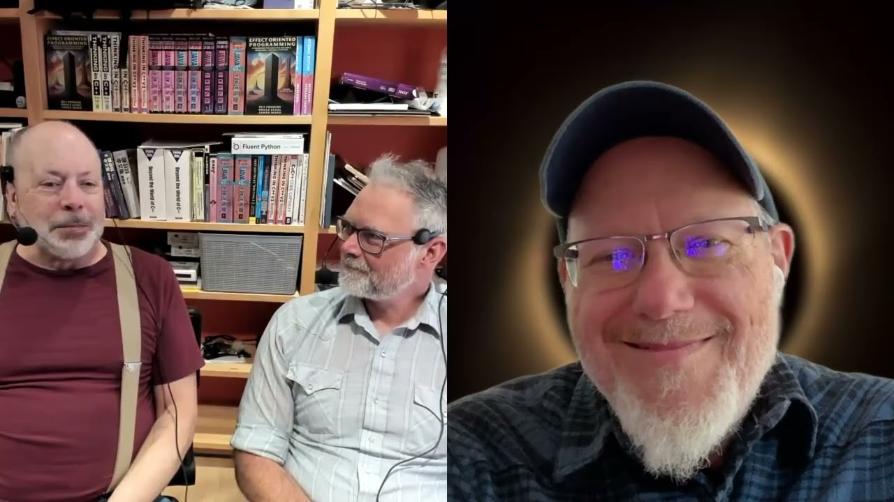

About this episode
We chat with Barry Warsaw, one of the core Python maintainers. In the episode we mention the late Tim Peters who had a significant impact on Python and we are grateful for all his contributions.
Resources & links
Transcript
Generated automatically by Spotify, so expect the odd misheard word. Select a timestamp to play from there. Download (.srt)
Read the transcript
0:01 Welcome to Happy Path Programming. I'm Bruce Eckel. I'm James Ward.
0:08 All right, well, welcome back to Happy Path programming. It's been a little while I've been I've. Been travelling a lot. Everywhere it's Yeah, I So I took on this new role and there should be less travel eventually, but I had to get through all of the things I'd committed to. So I was at Agent Con, which is the Agentic AI Foundation that I'm on the technical committee for. It was their big conference in San Jose and that was good. I had a session there and did a bunch of stuff with the Agentic AI Foundation. I was in Florida with my family before that. I was on a river this week so been all over the place. OK. Yeah, so it's good to be. Back it is. It's nice to have you back.
0:54 You. You always say, oh, this time I'll be travelling less and then I don't see you for a long time. Yes. So this week we are interviewing Barry Warsaw, who I have known for, I don't know, 20 years or longer. So at least at least. Yeah, I think so. And what's weird is we discovered that we have had at least one or more weird path crossings before we even knew each other. Because when I was at Fluke, I got into new Emacs and I learned Lisp. That's the only Lisp by now is the Emacs was built on top of Lisp, which is pretty brilliant decision I think. So I learned that and then I started the C++ mode for Lis, for new Emacs and like did very little on it. I mean, just kind of super basic stuff. But then sometime later you came across it and like developed, you know, made a whole bunch of additions to it, which, yeah, so we, we had this, we had this weird connection that way. And then I don't know, I think the first time we met was must have been a Python thing.
2:19 Yeah, like. Don't. One in Southern Virginia maybe was. Yeah, yeah. One of the early IPC's maybe, I don't remember if it was. That yeah, because, and then I spoke at the one that that weird company ran the conference and and they would charge so much and then wring their hands and say we're losing money, let's do it again next year. I was like, Oh my gosh, oh boy, oh boy. That. And then nobody could come because it was too expensive. So yeah, yeah, yeah, that was not. A good way to lose more money. Yeah, I don't know. Well, you know, Bruce, I got to say, so I just saw something yesterday or the day before that Emacs has turned 50. And so wow, I, I started reminiscing about, you know, we have a little, very small group of Emacs users at work and we have a Slack channel.
3:19 And so I was like, you know, I posted it. I was like, oh, Emacs has turned 50. And I started to think about my journey, you know, where I discovered Emacs, which was basically, it was an intern at what was at the time National Bureau of Standards. And we got all these Sun machines. And I was like, well, I need an editor. And then, you know, my mentor said here, use this thing, which was Emacs. And then with the C++ mode, you know, we were doing some C++ and with the one thing I remember is it couldn't handle two comment styles or fire per mode. So because like C only has 1, you know, early C, right, like only had one comment style, you know, the block comments.
4:07 And then C++ came around and they got those line comments too. And Emacs couldn't handle that. So that got me into like syntax tables and and when I sort of started playing with C++ mode and turned it into what became CC mode, so it handled C and C++ and Java, that was one of like my early programming epiphanies. And I still think about this story where, you know, it is C++. Parsing C++ is incredibly complicated. It's probably way more complicated now than it was, I don't know, 30 years ago, 20 years ago. And I couldn't trace my way through all the conditionals, but I started adding these little I I created a list and I would add a symbol at the leaf of every conditional.
4:59 So I know. OK, yeah, I took this path to figure out you've got to indent for spaces, right? And then I had an epiphany that what you could actually do like that, like those symbols were the important part because that was telling you, oh, it was parsing the code. And then I created a table that basically said, oh, if you see I'm inside of a class, you add 4. And if you see I'm inside of a method, I add another four. And if I'm inside of an if I add another four. And then when I'm outside of the, if I remove 4. And so that made the whole thing much easier to configure and run and use. And so the epiphany was always be aware of those things that you do because that might actually be the like the really valuable thing.
5:49 It started as a debugging tool and it became like the central way that you configure the mode. So, you know, it was, it was a lesson that kind of always stuck with me to sort of like those happy accidents, right? Are the things and that sometimes are the really the key insights? It is fascinating how you realize that tooling on top of what you're doing can make your productivity and understanding so much better. I had the similar experience. There was somebody who was coaching me at Fluke and they said oh just use Emacs and my first. I've been using Wordstar on my K Pro and my first impulse was to remap all of the key bindings to whatever Wordstar was.
6:42 And this guy said, I don't do that because if I ever have to go to somebody else's desk to show them how to do things, I don't know what their key bindings, you know, and right, I that stuck with me forever. I never rebind the keys. I learn whatever the standard is, even though I don't really go to people other people's desk very much. But but it's just a habit. It's like it's extra bullshit that you have to do at the same time. I don't remember the Emacs key bindings at this point because I, I stopped just years ago. Oh, you did? Yeah, I use Zed now, but I, I, yeah, no, I stopped using it. Well, the thing I tried to do when when I was at Fluke was I tried to write a term cap for my K Pro so that I could dial up and use the Emacs at work on the Sun machines.
7:40 But I couldn't. You know, I I learned a lot about term caps, but I could never quite. Get it working right? Yeah, and I don't remember anything about term caps now either. I wrote an assembler using Emacs Lisp. That's awesome. It was. It was. It was. It was. Her hand. Oh, yeah, I didn't. I didn't have an AI to help me. I just used. I used the language that was supposed to be the AI language, you know, Lisp, that's what Lisp was supposed to be. But but yeah, anyway, all that stuff. You are also a musician. Yes, mostly a bass player. And although I, you know, I call myself a bass player who has a guitar.
8:26 So I play a little bit of that and I play, you know, a little bit of keyboards and stuff and I do stuff at my studio. But yeah, I've been playing bass since I was a kid and I still still play. And you and I at the at the one of the Python conferences, we went to the Music Hall of Fame together. Yes, that was in Cleveland. Cleveland, yeah, yeah, right. Yeah. Which was, I mean, you know, it's always fun to go with somebody who's, you know, more of an expert because there's a lot of stuff that you knew. So anyway, let's talk about Python, OK, OK. Because I mean, you've been involved since, I don't know, like. Do you remember? Maybe give us the history. Yeah, give us give us your history with Python.
9:14 Well, so I'll, I'll just piggyback a little bit on the Emacs story because I was using Lucid C++. I don't know if you remember that it was kind of a cool tool. You know, it would, it was a compiler that had a database on the back end and has a compiled. Your C++ would store things that knew about your program in this database. And then there was a front end that could query the database and do things like syntax highlighting or cross references and stuff like that. That was Lucid Emacs, which Jamie Zawinski had taken, excuse me, and he had forked GNU Emacs and written this Lucid Emacs front end and put like X, you know, color, you know, made it X friendly, X Windows friendly, colors, frames, all that, all that great stuff.
10:11 And so I started using that. And then at some point Jamie was going to move on and do something different, which, you know, I won't go into his story, but he was looking for a maintainer. And so I flew out in early 1994 to the Bay Area and interviewed for that job. And as it turns out, because I had been digging into the internals of VMAX and I had done the CCC mode thing, I ended up not taking that job for various reasons. At the time, I wasn't ready to move to California. And so when I came back just a few months later, a friend of mine had just started at CNRI. And so I was still, you know, working. See, I was working for a Beltway Bandit at the time, you know, just a contractor and looking for something different. And so the CNRI job came up and I thought, oh, it's pretty interesting.
11:06 And so I interviewed there and I got the job. And they were building what at the time seems kind of naive these days, but it wasn't. They called them nobots. This was Bob Khan's, you know, nonprofit research place. And they're still around. And so these little agents were moving around, you know, to different machines. So it would move to this machine, it would get some information. It would say, oh, I got to move over there, do something over there. And so, yeah, kind of like like maybe a controlled virus.
11:43 And we were doing it all on Next machines and Objective C Now, as it turns out, a Python, there was an early Python user who was building an Objective C bridge. And it was really good because under the hood, the runtime models were very similar, right? So the, the language syntax was pretty different, but the runtime models were compatible enough that you could build this bridge and, and make it work. So around that time, it got me an e-mail from some of my friends at NIST, the National Institute of Standard Technology, which is where I worked my, it was really my first job sort of interning. That's where I somebody threw Emacs in my hands as an intern.
12:29 And then I started working there after after graduating high school through college and then after college. So it was kind of my first work experience and I still had friends there. And so I got this e-mail saying, hey, we got this guy, you know, this Dutch guy coming over to tell us to do like a three day workshop on his language. Do you want to come? And so we did a little bit of research. I was like, oh, I thought, OK, Python, oh, Python And objective C work really well together. We should go. And my colleague at the time, we went and spent three days at this workshop. And, you know, we have played with Python a little bit before we had gone just to kind of understand what the language is about and things like that. And so we had a great time and, and I just like really connected with Guido and loved the loved the language. I remember I just one more Emacs little thing at the first workshop.
13:27 I remember talking to Guido because remember, you know, when you write Emacs list underneath the sick function signature, you can write a little doc string that tells you what that function does. And so Guido and I agree with an Emacs user and I was an Emacs user. So we're like, oh, we really, you know, we should add doc strings to Python. And so where is it going to go? Oh, well, let's just stick at the same place that Emacs list does. I think Guido probably like worked for, you know, hacked on the code for maybe an hour and he was like, how there you go, it works. Now I'm just adding to the language of the words. That's how I remember it. And so that's why we have docstrings where they are in in Python. And so anyway, so the workshop was great. And then I went back to senor, My colleague and I went back to senor and we're like, Oh my gosh, this is awesome.
14:18 We should definitely use Python. We should definitely use the objective C bridge. And one of our coworkers said, well, why don't, why don't we try to hire Guido? You know, like, let's just ask him, you know, And it turned out to be like the perfect time for him to come to the states. And so he came to the US worked, worked at CNR in Virginia for I think we worked together for eight years before he, you know, moved, moved to California. So my journey was through. That was kind of the, you know, TLDR of my you. Happened to be in the right place at the right time. Oh, it is. Totally. It's so awesome. Yeah, yeah, yeah. Yeah, then no clue. Yeah, go ahead. Sorry. Back then, adding features, you know, you, there was no, no red tape, no process, right?
15:07 Just just. Put whatever, whatever. Changes you want. That's. Yeah, you contrast. The enjoyability of that versus all the the over the. There's definitely something. The walrus operator. Yeah, yeah, yeah. Well, I, I like right before COVID I had put together a talk and a bunch of slides for like the early days of Python. And, and So what I did is I pulled down every version of Python from like 0.9 point something I think my first version was like 1.1 maybe or just before 1.1. And I pulled down every tarball, every, you know, e-mail, you know, announcement message of Guido's and every news, you know, news change log. And of course, I couldn't build anything on any modern platforms without like changes.
16:04 I'm sure, I'm sure the agents could just, you know, just do it for you now. But the way Guido changed the language in the early days was just like, he just made the changes. And he's like, I remember the one point I'm remember incorrectly where the single equal symbol was both assignment and comparison and he just changed it. He said that's you know I changed the comparison to double equal and just change your code, you know, fix your code. Well, when you say all user base you know. Exactly. It doesn't matter. They're all in the same room with you. Yeah, exactly. Exactly. So that is fun to be able to iterated that pace and now you're at the other end of the spectrum. You know exactly where it's like, you know, everything's got to be, you know, a, you know, 20 page pep and you know, you know, years of discussion to change anything. But yeah.
17:03 Yeah, a lot of people rely on the challenges. Success like the. Challenges, yes. Exactly. And now wait, did you work for the what? Who is what was the soap people? Yeah, it was. It was digital creations at 1st and then it became SOAP. Corporation. So yeah, that's right. So it was soap. You, you you did you work for them for a while. I did so in 2000 and the.com boom, you know, we kind of got disillusioned being at CNRI a little bit and thought, oh, all you have to do is strike out on your own and you'll be rich and famous, right? So we joined.
17:50 So we had this little Python Labs, which was really kind of an informal thing. Guido and myself and a few other people and actually Tim Peters came in to Python Labs and we moved over to be open to be open another Emacs connection through Bob Weiner and so we created this little, you know organization with him be open to sort of monetize dish. I found work not lasted I think 5 months, like literally 5 months. And then that was gone. And so we looked around for a new home for Python Labs and the folks that, you know, at the time, digital creations, you know, we knew them, they would, they had this product called SOAP and, and they were not far. They were in where were they?
18:44 Oh, Fredericksburg, VA. So, you know, it's like an less than an hour drive. And so we really like those guys. And so then we moved Python labs over to them and, and work there until, you know, most of us moved on. So on a few years. Yeah, we had a little, we had a little office in Northern Virginia where the five of us were. And then we'd go down to Fredericksburg. Yeah, once or twice a week. Bigger. Yeah, I went to one of their. I remember, yes, because Jim Fulton was he was trying to coach us how to use Git and it made no, it made no, you know, for this workshop, OK, we're going to use Git for, you know, for all this.
19:32 And it's like I it took me years. It's I mean, I'm still learning Git. No, I don't need to anymore. No, I don't need to anymore. Exactly. See, that's, that's been my experience. You wait long enough and some of these things, my my intuition sometimes goes, no, it seems important, but don't bother, you know, and then eventually it works out. That's like, yeah, that was right. Yeah. But but yeah. And and I I struggled also to learn SOAP. And even had, oh, Chris McDonough came up here for like 5 days and we worked on something for SOAP that was, I don't know, it was some sort of information annotation thing. I don't remember.
20:22 It was an idea that I had. Oh, wouldn't it be nice to, you know, something that you probably wouldn't even notice at this point? But but at the time it seemed kind of revolutionary. But yeah, SOAP never really. I never really fully grok SOAP either. I got yeah it was but. But there were a lot of, there were a lot of really interesting opponents that they built for SOAP, like the ZODB was really neat. The Zoap, what are they called? The Zoap component architecture and Zoap interfaces. And I used all that stuff and I didn't use the Zo DB, but I used the ZCA and interfaces in Mailman. So I needed a way to do kind of a lot of the things that Zoap had these little libraries for.
21:13 And so I just adopted those, you know, because they just did everything I wanted. Right. And you when you created mailman, that was, I mean that was was that before Gmail was around or? Oh, it was way before Gmail, but I didn't create it actually. OK, a guy named John Viega created it to be the. He wrote it in Python he was at. I forget which school Dave Matthews was at which. Is it like Charlottesville or University of Virginia or something like that? I don't remember. But he was a Dave Matthews fan and they, they were just a little band. They were not. They were like just a local band at the time. But they needed a mailing list, so he wrote mailman. For the Dave Matthews Band.
22:01 Dave Matthews Band and we were using Major Domo to run all the Python mailing lists and we're like, we cannot use Pearl. That's not right at all. And so we kind of adopted my our friend Ken Mannheimer did a lot of the early work in adopting mailman for Python use. And and so that we switched over and, and use that and I just, I just really dug it, you know, I thought it was really cool. Had a lot of interesting problems solve. And so over time, I just became the mailman, you know, leader or project leader. Right. Well, and also you came up with a statistical way to deal with spam that was?
22:49 Again. You you used Bayesian analysis. Yes, yes, I did not invent it. I, I don't think I invent anything, but you know, I just. You didn't invent C++ mode. I did. You just made it work. Exactly. I didn't exactly. I didn't invent Python mode either. I I think Tim Peters did and then I took that over for a while. So, yeah, but yes, I think I nerd sniped Tim Peters into taking like this Bayesian. I don't know, we saw a paper somewhere or something about the the Bayesian stuff. And then he created spam bays, which I think is still running on python.org, like mail that goes to python.org, which is, you know, less and less these days. Or like a lot of people don't want to use e-mail, which I don't either, you know, so you know, but it, it's, I think spam base is still being used to filter Bam on python.org, Yeah. That's awesome.
23:51 Yeah, it was the first time that I think I had heard of Bayesian analysis. And because of YouTube, in the last few years I've I've started to actually grasp what it is like. The foundation of science basically. Yeah. It's it's, yeah. It's pretty fascinating, you know? Yeah. So you've cleaned up other people's messes many times, including Bruce's messes, I guess. That's. A good way of putting it, yeah. For. Sure. Any other messes worth highlighting? Oh, I'm sure they're out there. They're not. And you've made contributions to, you know, the the language features in Python, I think, right? Yeah, yeah. Which which ones did you?
24:37 Well, there's been a lot and a lot rejected. So I, you know, I feel kind of proud that I've had a lot of terrible Python ideas too, that the, you know, one of the, one of the early ones that I can remember was the print Chevron Chevron, right? Like, because in Python 2, print is a statement. It's not a, not a function. And so we are we, you know, used to be you'd have to like. Move. You know, switch stud error or you know, assign stud out to stud error or sign stud error to stud out and then do a print to get anything to standard error. And I think I wrote the print Efron Chevron statement E word in Python 2 so that you could print any, you know, any file object. And it was ugly and terrible, but it was the best you could do I think in Python too.
25:36 So thankfully no longer necessary you. Know. Was the syntax inspired by by Unix like pipes or something it? Was yes, yes and C++ also right? You know you can. I don't even remember the C++. I haven't used the. Shift. Yeah, using the shift as the 4C, Yeah. Oh, so I have a, an embarrassing admission because years ago, when I was still mostly in the C++ world, Guido asked me if I thought C++ was good enough to, to rewrite Python into. And I said, yes, it's awesome. You should be able to do that.
26:23 And I know that there was a, you know, there was a period where it was like, OK, we're going to try this. And you know, embarrassingly, I in hindsight, I look at it and go, oh, I would not have made that recommendation if I'd known what I know now. But and but now, and I feel like I, I used up my credibility on that one because now I would say, OK, Rust might be instead of C. What's the? Is there any thinking about that or? There is in fact, I don't remember the pet number. I, I I'm sure we could look it. Up well there is an implementation. I mean somebody has has implemented Python And Rust.
27:11 Yeah, and you know, I mean, that's been a rich tradition for many, many years, decades probably of re implementing the language. And that was like J Python, which became Jython, which I think was really important for for Python's evolution because unlike some of these like Tickle and Pearl in particular that I'm thinking about, you know, the implementation defined the language. And so when Jim Hugginen, you know, kind of like challenged Guido to, you know, I can rewrite Python in Java. And I think Guido was unconvinced. And so Jim, good on him, said I'm going to prove you wrong. You know, it forced Guido in a way to make a decision about what was language and what was implementation.
28:02 You know, there's lots of, you know, corners of steep Python that are implementation specific. There's lots and lots. Most of the Python language is defined in the language spec. So if you're going to rewrite Python in another implementation language, you've got to be compatible with the language stack. So I think that that's a really important, that was a really important evolution in Python, the languages history. That said, many attempts have been made to re implement Python And other languages and you know, other substrates. And I don't As for whatever reason, C Python is still, I mean, I have my, I have my reasons.
28:48 I think I know why, but the Python is still the reference implementation that everybody goes to. Yeah, it is interesting how how languages go different directions on that. Like I think like Java has a a very lengthy comprehensive language specification and Python does. But then if you look at Kotlin, I think Kotlin actually does not have a language specification. There is only the implementation of the compiler. And that is if you try to go implement Kotlin. I was like, yeah, good luck. Well, I think C++ was like that initially too. So yeah, the reference implementation was the Bell Labs thing. And because I mean, there wasn't that many people working on it that they could allocate somebody to building a language specification. I think that's actually why Strewstrip started. The committee was developed a language spec, so I'm. So glad Python.
29:46 I mean, Python has a steering council, but it's not a committee in the same way the C++ committee is. I think that's really to Python's strength, you know? Yeah. I mean, it's had it's, it's had it's dramas as well. And my experience of this C++ committee was in its formative, you know, first eight years and it seemed, I mean, everybody on it was highly technical and interested in the technology. And so I've, for me, it was just a wealth of learning from people who are way smarter than I was. That's that's why I went to actually. But yeah, I don't know the, it's an, I guess it's inevitable that we get these evolutions and you have to bring, you know, younger people in and they're going to have.
30:45 Absolutely. Their particular bents about things and you just kind of have to ride it out I guess. Which I think is, is healthy, right? Like I, I, I mean, you know, the, those of us who have been in Python for 30 years, you know, we're not going to be driving Python the next 30 years, you know, And so I think it's really important to bring that the younger engineers and generous and have them give them the opportunity to lead and also encourage their exploring their own vision of what, for example, Python should be. So like with Rust, we actually are doing a experiment to not rewrite Python And Rust, but bring Rust the Rust tool chain into C Python so that we could for example write extension modules in Rust.
31:41 I have had the I over the years. I have struggled and obviously it was not easy enough because people kept coming up with new ways to write extensions. I could never get any of them to work. Rust Instant instantly works right out-of-the-box, does all the right things. It's like we yeah, we should not have C extensions anymore. I they're just too hard to create or maintain and Rust just, and it's usually faster than it has, I mean the libraries that it has for concurrency. If if you know your Python concurrency stuff doesn't work, you know, write a do a Rust extension. Yeah, it's it's amazing how well it works.
32:28 And there's a really good Python binding layer, you know, for Rust. And so I think what you know that it's a long process, right? Like you have to figure out what's the right API to bring into the core that you know, because Python, that was one of the first things I did when Guido came to the States was we had this thing called the grand renaming, and I think it's on Guido's Python history blog. But all the C symbols were just names, right? And so they collided with when you try to embed it or extend it or extend an existing C application, the, all the names would collide, right? There was no name spacing. So that's when like you now you see Pi object this and π object that and π tuple this. And you know, so that was a, that was a early project that I worked on was renaming all the internal C symbols. And so that effectively is the C API. And so now we, we need a Rust API so that when people want to do things, want to write Rust extensions, they can use the really nice binding layer.
33:35 That's a third party thing. But what would you do if you wanted to rewrite Z Lib or struck the one of the built in extension modules that come with Python out-of-the-box? If you wanted to write that in Rust, you need a Rust API. And so that that's the work that's being done now. It's like, how do we define that Rust API? What's how do we make the Rust tool chain work with pythons like ancient, you know, auto conf stuff, make file based, you know, compilation. So it's it's really, I'm very optimistic that this is going to work out, but it's an experiment that we have to just go through and figure out the things we don't know and and make that work. So. So here's a separate question, which is OK. So I've been working on this.
34:29 You, you may remember, May not, I think it was around 2008. I thought I'm going to write Thinking in Python And I, you know, kind of worked with it for a few years and then gave it up. And then last June, I thought, let's see what Claude can do with the mess that I have. And it started cleaning it up. And then I started pouring in all kinds of other projects that I had done, presentations and things put it in. And so, but one of the things that I've done is static typing everywhere. And I, I can't go back at this point, you know, I UN UN statically typed Python.
35:15 I, I don't know if I, I would look at it and go, huh, OK, no idea what's going to happen with that. So, but I'm wondering how is the, how's the uptake of that in the community? Do you know? I, I think it's been really good. I think that that is another stage of Python's evolution that really worked out well. And I'll I'll say upfront that I was not a fan of type annotations in the early. Why was that? Why was that? Because I like the malleability of Python, I'd like the the ability to just write some things and have it evolve over time. And Python was always, it was like the most Direct Line from what I had in my head, vision that I had in my head of the thing that I wanted to write.
36:15 And I didn't have to worry about any boilerplate BS, right? Like I just could write what I was thinking, speak, you know, run it right away and have to run through a compiler. I didn't have to add a bunch of Chrome around things. I don't know. You can validate. I thought that years and years ago I said something like Python fits my brain, but it could have somebody else. I don't know. Anyway, yes. So you liked. Yeah. And that is fun. I mean, I have to admit that's fun, Yeah. But, and, and this is what really changed my mind, the type annotation stuff kind of came out of Instagram, right? Because Instagram, I have no idea what it is today, but at the time it was just like a big Python location server side was with the big Python application, like huge Python application. And they were struggling with, with comprehension of the code base.
37:13 Because you know, in a, in a company, you always have turnover, you have new people come in, people leave. So how do you bootstrap new people into comprehending the code base quickly? And so they built this, you know, the essentially the type annotations. And so we went to Instagram and, you know, talk with the people who were doing this. And that was the thing that really, because I had seen in my own company, not my company, but the company I was working for, how people struggled with comprehending existing code bases. And so I started playing with it and I used it a lot, mailman and some of the other systems I was building. And I was like, oh, Python to me, it's got the right, it's got the right balance because you can still do all that fun.
38:07 No boilerplate, you know, just write some code, have an idea, write some code, test it out, see what it looks like, you know, you don't have to worry about any of that stuff. But as your code, you know, increases in size, and as you start to share it, especially with other people, and they have to understand what your intent was, then that's where the type annotations come into play. And because they're only there for the static type checkers and and with some asterisks here don't affect anything at runtime, right? Like as the Python's runtime ignores the type, the type annotations it well. So it's not part of the language and I don't need to use them. You don't need to use them, but they are part of the language at this point.
39:01 But yeah, you don't, you don't need to use them. I mean, you can strip them all out and Python will Python, your Python code will still run. But I mean, being able to run a type checker over your code and say, oh, I'm passing a string here when I really should only be passing in, it's like, that's incredibly helpful. So I think, I think it's wonderful. Well, the correct the way that works, I think is and James and I had an experience. We wrote a book a long time ago and the language that language had, it had this idea of gradual typing. And so if you know, normally you'd statically type check everything, but if you wanted to do something funky, you could, you could do that within one function and then everything else. And, and it wouldn't be, you know, I, I guess it's sort of like rusts unsafe mode or something, which I've, I've never used, but we found that very liberating. But I, I don't know.
40:03 I found for me it's about ensuring that the code is correct. That's, that's what I find the type checking gives me. And we had a conversation, I don't know if it was a month or so ago, where you were saying that if you had, all we had to do was add one more thing, which was the, the what's the types that where they know their value value. Value dependent types. Value dependent types. So if we added value dependent types to a language, we could eliminate unit testing. Because I know it's a fascinating idea because if you have all of these other things in place and you add value dependent types, then the compiler can know everything about what it's going to do. I mean, you still have, you still need other kinds of testing, but you wouldn't need the unit testing. Everything could move to functional testing, which is I think kind of where we're going anyway with with AI, you just say not really, don't really care how you implement it as long as it passes the test.
41:15 And in the end, that's all we ever wanted anyway. Yeah, so just recently I I rewatched a Phillip Wadler talk on. Gosh. It's such a great talk for this like moment that we're in and of course it's like like 10 years old or something like that. But he was it was a talk about types as propositions and it's the Curry Howard stuff. You know, he but really well done talk on on how you know your types can represent essentially a proof. And and I think that that back to the previous topic of with AI so much now of what our programs need to do is or the hard parts of programming are the validation parts. And so the more that we can, you know, encode into the actual language that generally easier it is and seen many different experiments around this like now there's like the the aver one that we looked at had like lean proofs kind of built into the language and that's one approach. But yeah, one of the observations that we kind of realized was that previously introducing a new language was a huge effort not only to design the language, but to introduce and convince the communities to use it. Now you can create a new language, you know, throw it at the AI, and you have instant uptake. And So what we've seen is a number of people designing new languages with modern features and a lot of the human affordances that we, well, especially Python, it's full of them.
43:01 The AI doesn't need those. It can do a, it can deal with the kind of a reduced instruction set in terms of of language features. And so it's like, I don't know, all this mind blowing stuff keeps happening. How much are you using? AII think it's amazingly fantastic, especially and especially for sort of more experienced engineers, because you know, I used to think I used to when I was writing things like I would have an idea and I'd say, you know, it'd be really cool to have that thing, but I know how hard it would be and how much time it would take to write the code. And I'm not going to do it, it's too much work. Exactly.
43:50 And they? Did that many, many times. Yeah. And the way I I've described it is I used to have to think about the how, the the what and the how. And now we only think about the what. And it is liberating, absolutely liberating. But I don't know if that's, if that's sort of, I don't know where that's going to lead. And I don't know where that leaves engineers who are starting, who don't have the experience to look at something and go, you know what agent you're wrong, like that's not right. Or ask questions. I found I've always found it like the, I think they call it right. The Socratic method of asking questions is really, really valuable. So when you look at some code and you go or the, or the AI will say, I'm going to do this and this.
44:40 And just like, you know what? I don't understand that bullet point. I don't understand what you're saying there. Or you just changed my code. Why did you do that? And just asking it questions and that has been I have found very valuable, but it is. Oh, you're absolutely right. That's not as good as. Let me Make it better. But you have asked the question. You have to go. Hey, this doesn't look ragged. Explain why. Oh, actually, yeah. Yeah. And it'll it'll. I think there's I think there's two, I think there's two things that we have to teach younger engineers as they're coming into this completely new world of like AI driven code. I don't think I don't think what we grew up doing this coding, I don't think we're going to be coders.
45:26 And I and I you, you kind of I kind of have a nostalgic for it, but I also think that we're actually doing we're just raising the abstraction layer. That's right. Which is what we've always done. Which is what we've always. Been our goal and you you probably programmed in assembly language, did you? Oh yeah, OK, because I did my first few years and then compilers come along and I go, OK, forget assembly language. It was useful to, you know, look at the output of the compiler. That's actually how I learned C++. But but it's like OK, I know assembly language is there but I use a compiler and I know programming languages are there but I and I review it and everything but I use the AI. Why would I?
46:13 Yes, exactly. I think I, I, I, I've talked to so many people about it and like a lot of people, you know, that work or in, in Python are not using agents to code, right. And there's a lot like there's a like a variety of reasons and some are using it and there's a whole get, you know, scale of, of engagement with it. But I think the skills that are really valuable when using agents are curiosity and creativity. And if you have those two things that agents are just another tool get the accomplish. I have gotten things done that I've wanted for 30 years and I'm just like, hey, write me this thing And it's like, boom, you know, and as long as it does what I wanted to do, I had a really interesting epiphany several months ago.
47:11 I, I wanted this tool that I had had on Linux and now that I'm missing on Mac OS, that tool didn't exist. I was like, I just, I'll just tell it to, to write this thing. And so it was partly written in Swift and partly written in Python. And there was a moment where I was like, OK, now we're going to make sure the Python looks the way I like it to, to look, you know, so I want to get all my, you know, auto formatting settings the way I like. And then I was like, wait a second, why am I doing that? I don't really care, you know, I just don't care. It does what I want it to do. And when it doesn't do a little thing, I'll just say, hey, by the way, extend yourself now to do this other thing. And it cranks away and I test it out and it doesn't. And if it works, then it's like commit and push. I don't care.
48:03 I just don't care. So now that's not to say that that's true of all the code that I write, because there is still code that I really do care a lot about the human aesthetics mind of it. But yeah, yeah, you know, it's. It's wild. Yeah. It's a big spectrum. Yeah. I think on along those lines, there's been a lot of debates recently around does programming language matter? And some people are like, like everything should just be written in Rust or everything should be written in Python or everything, you know, it's everybody's got their their camp. But I am, I'm, I'm curious about your perspective on this debate is like, like if the agents are writing on the code, why isn't it all in Rust? Or, you know, pick, pick whatever the most optimized language for your target platform or something is.
48:50 And like, I don't know, I'm struggling with, with my rebuttal to that because I've, I definitely feel like, like the languages that I use matter and that I, you know, I want to be able to choose my language and not like, I think Rust is great, but I want to write everything in Rust. And maybe, maybe I'm just old and. Or one of these new languages that are better for the AI and, and it's like, you know, well, when we had compilers, there were people who would say, well, the compiler will never produce efficient code. Like I can do it by hand. And you know, you do need some people who know how that works. So they can, you know, write LLVM or whatever and they, you know, they know how assembly language works and how the machine works, but far fewer of them.
49:43 And I think there will still be people who need to know what the how to look at the code that is generated by the AI and analyze it and understand it and track it. But again, far fewer of them. And we all become creators and designers. I think programming languages exist because it's a human communication medium, right? Python was so mind blowingly revolutionary because it allowed humans to communicate their intent about what they wanted their programs to do in a way that felt very natural. Certainly for English speakers. It felt like we're just conversing, you know, we're just talking about what this thing is. It's, it looks like English, you know, in a, in a way, right. And I think we're holding on to that sort of bias when we even talk about Rust, I think that there will be a moment in time where the agents, whatever you want to call them, say, you know what?
50:46 All these these human constructs of languages are just slowing us down. Now, humans tell us what you want. Talk at that higher abstraction layer and there will be ways for us to communicate between humans and from us to communicate to the agents what our intent is. But what all the stuff underneath that, I don't think I don't think we'll even understand it. I think eventually the agents will just say we can do this much more efficiently in language Q or X or Z or M or, you know, whatever it is, right? And and they'll just bypass bypasses. And you're right, there will be an ever growing smaller section of people who need to look at that or want to look at that and understand it.
51:37 But I think the vast majority of people will just not care. And you mentioned, you said something earlier that really has resonated with me and I've been thinking about a lot. You called us creators and in some of the programs, some of the stuff that I've written recently got written, I don't actually feel like I'm the author in the, I'm not the programmer for sure. And I don't know that I'm the developer. I feel more like in the music sense, a producer or in the film sense, a director, right? Somebody who is, has got a vision for something. And I know these tools, I can bring them together and I can make that vision, I can create that I can bring that vision to fruition in the way I see it. And it, it's a much more creative endeavour and I see myself.
52:37 So I love the word creator, director, producer, whatever it is, it's that expense of like, I'm not going to worry myself about like somebody's got to worry about where to place the lights and, you know, how to move the faders on the on the, you know, mixing console. But what I'm hearing and what I'm seeing and what I envision, that's the thing that I want to, you know, bring to life, so to speak. I saw an article this morning where they were talking about how the enterprise level organizations are becoming unnecessary to do maybe most things because those were necessary because, you know, you built a a company and it started to get too complicated. OK, we have to bring in the adults, which turned out to be not actually they were Business School people and they thought they knew what they were doing and more as more often than not they messed things up.
53:44 But anyway, we don't need to do that anymore. And so, or we're moving in that direction because this is one of the things that I see AI as a huge benefit is what about just doing all of that company running stuff so you don't have to and the creatives can focus on creativity and they're not being driven by the MBAs. They're able to make their choices and the cut and the, and the, the AI is going, oh, you know, if you make this choice, this may have this impact or that impact. And they're not saying things like, well, I'm lonely now. So I want everybody to come back to the office and make, you know, make up reasons for that.
54:33 And it's like the more you see this, you, the more you realize how much BS there is involved in all of management. And so it's like, what if we had a manager who was actually making good decisions for the company rather than good decisions for themselves? We could, you know, 1000 flowers bloom or whatever. And it's like a few of us say, Hey, we'd like to, you know, work on this. And instead of going, oh, we're going to have to get, you know, people to do all that extra business stuff for us, it's just like, no, just do it. Yeah. And maybe that's what we need to convey to the students who are in computer. Science and programs today. I mean, if I was, if I was, yeah, If I was graduating college today and I realized I had all these tools right at my fingertips. I, I mean, the, the, the horizon is unlimited. You know, I don't know if that's the right metaphor, but like, like the possibilities are unlimited. I, I think you're absolutely right. I think, you know, we are, we're sort of witnessing, like the analogy I think about is the Internet. And, you know, I, you probably were, and I certainly was, I was on the ARPANET, you know, and I remember when, you know, like the Domain Name System came out and it was like, whoa, that's amazing.
55:59 And but it was a thing that you had to, you know, like the World Wide Web, right? And so it was a thing that we're like, wow, that is really cool. I don't know what to do with it. Nobody knows what where it's going to go or what to do with it. And now it is literally it is, it is at such a pervasive low level that the web and the Internet, you know, even kids today don't realize I'll, you know, completely plumbed through their everyday experience. It is. And they don't even think about it, right? Like they just open up their phone, they go to, you know, Instagram or whatever it is. And they're like, OK, cool, blah, blah, blah. You know, and I think we're, I think right now AI is at that stage where we're just like, oh, it's such an amazing thing.
56:49 And there will be time. There will be a time where it is just absolutely pervasive and we don't even think about it. And I think about like everything from like, you know, modern cars, right? They're basically computers on wheels, but they have a jillion little options and switches. And all I want to do is make my temperature 2° cooler, you know, when I walk and I get into it. Or I think about like the music software that I use, you know, and it's incredibly powerful, but I know maybe 110th of it, you know, and I want the A and I know what I want and I want to be able to tell the AI, Oh, take this three, these three beats and move them back a millisecond you. Know without having to dive into the user manual, yeah. Exactly.
57:37 Exactly. I heard someone call this, this next generation software, which I don't know if I love the name, but I like the idea that that we we now can build, we can build whatever. And we're also getting to the place where we can customize whatever and interact in the ways that we want to interact, like setting settings. Menus are going to go away. I'm never going to have to search through settings ever again in the software. World right? Or menus or any of that crap. Exactly. Right who? Cares. I think it's super exciting, but what's weird is that we've as developers mostly focus the innovation on our tools, right? We've we've taken all this great AI technology and we have applied it to make building software better. And there will be a moment where where this reaches out to totally other domains.
58:25 Last week at the conference I was at, one of the best talks I saw was just a short keynote on a guy whose dog got cancer. And he didn't know anything about biology and mRNA stuff, but he used AI to create a customized MRAMRNA vaccine for his dog to cure its cancer. And I'm like, that is amazing. And this is like we're just at the beginning of being able to use these tools in totally other domains. And I've seen people, you know, they'll write things, they'll go well, AI has only ever been used in the tech field. That's only place where it's making a big difference. And I'm thinking, no, they've been solving math problems. They've been solving material science and chemistry. Self driving. So all kinds of stuff.
59:12 And this is well, I don't know, I think this kind of comes from the and science fiction writers do not do a good job. You know, a lot of times they'll go, well, what happens if I don't know, take the Klingons. What happens if a Bronze Age society gets high technology somehow? And then they're they're just the same. Their culture never changes. And you're going that can't that, you know, we see this in our own world. We have new technology and it obviously changes the culture and it spreads out and effects other things. And so I don't know I I'm not. I think you're going to, you're going to see, I think the next, I think one very valuable thing to mind if I was writing a software package, it would be hyper. Customization and I and here's the analogy. And first of all, like RIP Patrick Stewart and Walter Koenig, who, you know, sadly, you know, Wayne didn't both passed away this week.
1:00:16 But. Oh, I didn't know that. I think. Yeah. Oh, yeah. Oh, yeah. It's super sad. Patrick Stewart yesterday. No. But I think about the Star Trek analogy and you imagine you've got this amazingly complex Starship, right, With like dozens of species, OK. And now you sit down and, you know, like a human or a Klingon or, you know, you know, some other species has to sit down at this console and drive the Starship. Well, they've got. Why are they driving the Starship is question one. Yes, exactly. But you walk up to any console and it has to adapt to you.
1:01:04 It knows who you are and it has to adapt to the way you work. And we all. That's why you love. Yeah, I love Emacs and you love them and you know, like, like those are, those are very coarse grained adaptations to individual preferences. And I think we're going to get really hyper, you know, adaptation, hyperly adaptive programs who just learned like, I mean, even the agents do this now. Like I have trained my agent, the one that I use most often, to write ODE and prose the way I would write it. So when it ends up writing something, I'll go. You know, I wouldn't say it that way, but I do that much less now because it is. It's as. Long though, it keeps getting better and better. And then every once in a while I'll come across something and I'm going, This is word salad.
1:01:57 And I'm getting to the point now where I say now, because I don't know if you've gotten this, but it'll do this like it has a PhD in grammar and it'll analyze it goes, oh, well, here's why that sentence didn't work. And I go, OK, now capture that analysis and put it in my corpus of writing things. So you don't do that anymore. Yeah, exactly. I do things like, I don't like M dashes, you know, or like, please use English spelling, you know, US English spelling instead of British English spelling or things like that. And sometimes you have to teach it multiple times, but eventually I think it learns out how. And that's, I think the ultimate goal, right?
1:02:44 I want it still to be a product of my creativity, but I want it to be to just take all the toil out of my life. Like the less toil I have to deal with the better. But I but it fits my vision well. And there are things like, I mean, other people, like there's a skill based on Strunk and White. Yeah, you know, and you can bring all those in, but it doesn't cover everything, you know, there's the how you get it to do active voice. Yes, exactly. And, you know, and I'm constantly tuning that, and at some point I think my thing would probably be useful for other people to use. So yeah, Bruce dot MD. Yeah. You know.
1:03:30 So to bring this full circle to close us, I'd heard someone propose that for this generation of of like software or deeply customizable software, that Lisp will actually be the right language. And I'm like it actually. You said something along these lines at the beginning where is like like, yeah, maybe this all just comes back around to Lisp and that's, that becomes the the thing that enables this kind of deep customizability. Yeah. You're wrestling with them. I am because, well, I mean like what is for example, what does Lisp do with effects? Yeah. I saw, oh I saw a little clip the other day where somebody was going.
1:04:16 Why did they put an S in lisp? It seems cruel.
1:04:26 Yeah, yeah, that's funny. Yeah, yeah. I, I just don't, I don't know. I'm, I think there's a lot of advances since Lisp that I'm not sure that that would be the, the right language. I think probably eventually we'll be able to say to the AI, here's our constraints, create a language that meets them. I mean, why not? And if you know, and then you use that language and everybody's happy. I don't know. Yeah, it's probably gonna be a lisp is what it's gonna. You think it'll be a lisp? I don't know. It's gonna be, you know, it's gonna be fourth. Yeah, that was my, that was my first professional language, was 4th. Really.
1:05:13 I played with it a little, but I don't know if I ever wrote anything serious in it. Yeah, that was because that's kind of a mind bending thing. No, it's a right only language. Yeah, yes, exactly. And I don't know that we want that. Or here's another possibility. We'll get to the point where we define the problem and the AI will go, OK, I'm going to create the language that fits that problem, which we've done before. I mean, we've, you know, like if you look at Erlang, that was kind of a language designed to fit and, and Go is, I would argue, not a universal language, but a language designed to solve a particular problem, set of problems. So why? Why wouldn't the AI do the same thing at some point? Exactly.
1:06:04 Which would be a weird a weird world to be in, but I don't know. Maybe that's where we're heading. It's. Kind of be fun, yeah. Yeah, yeah, totally. Well, Barry, I know you've got got to drop in a few, but any closing thoughts? I always have a good time hanging out with Barry. I don't know. We got to get them up here to Chris. Well, that's. The plan it's really fun. That is the. Plan. Just to have them come up here sometime and we will. Oh, by the way, we forgot to say winter. Tech Forum coming up. Winter Tech Forum will be March 1st through 5th. You're in Crested Butte. Yeah. And we, as usual, we'll probably have some new tweaking. We might have the banquet at Bill and Halley's new house. I don't know.
1:06:51 That would be fun. Well, yeah, that might be the. Yeah. And I don't know if you ever do anything in the winter, but you know, it'd be great to have you come up for the for. The. Conference. Yeah, put it on the calendar. Yeah, yeah, that would be, that would be fun. Then you get to see what we're like in the winter, and this winter might be a whole ton of snow. El Nino, Yeah. Yeah. So no, no, yeah. Well, thank you both. This is all we thank you, Barry. This. Has been so much fun. I know it has Python conferences. Bruce and I will always try to have an evening dinner and get together and we could talk, you know, we have talked for hours and hours and hours and, and it's always so enjoyable. Fun.
1:07:36 Yeah. It's, Oh my, it's kind of the peak of the conference anymore, you know, those, those few events where you're just, you know, yeah, yeah. And I'm planning it being at the next one, so. And I'm sure you will be. Yeah. So we'll have to set aside some time. You, me and Guido go out to dinner or whatever. Yeah. Yeah, definitely. All right. Well, thanks, Barry. It was great. Thank. You thank you very much. Cheers.